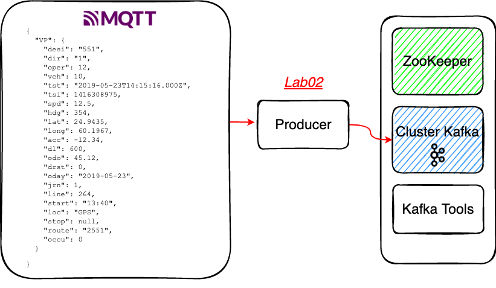

# Lab02 - Producer
# Rappel
# Digitransit
https://digitransit.fi/en/developers/apis/4-realtime-api/vehicle-positions/ (opens new window)
La plupart des véhicules dans la finlande devraient publier leur statut, y compris leur position, une fois par seconde. Ce qui permet de facilement tracer leurs positions et de réaliser des exemples concrets dans un environment proche IOT.
# Consommation de la file MQTT Digitransit vers Kafka

# Un record
# Préparer le projet et le topic Kafka
⚠️ Checkout de la branche
step02⚠️.Se placer dans le repertoire
Lab02-producer.Créer un topic
vehicle-positionsen CLI si celui-ci n'est pas déjà présent.
⚠️ Penser à être présent dans le conteneur
tools
kafka-topics --if-not-exists --bootstrap-server kafka:9092 --create --topic vehicle-positions --replication-factor 1 --partitions 1
# Un peu de code
Au sein de ce lab nous utilisons spring-kafka (opens new window) pour dialoguer avec Kafka au sein de l'écosystème Spring Boot.
Nous allons découvrir sommairement, comment envoyer un message à l'aide de Spring Kafka. Pour plus de documentations: https://docs.spring.io/spring-kafka/reference/html/#sending-messages (opens new window)
En effet pour produire un message vous disposez de plusieurs façons de le réaliser avec Spring Kafka:
- en utilisant
un
Producerhttps://kafka.apache.org/26/javadoc/index.html?org/apache/kafka/clients/producer/KafkaProducer.html (opens new window) - en utilisant un wrapper (pour masquer une certaine
complexité)
KafkaTemplatehttps://docs.spring.io/spring-kafka/api/org/springframework/kafka/core/KafkaTemplate.html (opens new window)
- en utilisant
un
# Utilisation de l'API Producer
Explorer le projet Spring Boot
Lab02-producer- La configuation présente dans le fichier
application.properties - L'auto configuration de
ProducerFactory<String, String>en lien avec les properties - Le client mqtt qui récupère les évènements de Digitransit (opens new window)
En effet, Spring Boot fournit une configuration automatique pour Kafka via la classe
KafkaAutoConfiguration(javadoc (opens new window)) . Lorsque vous utilisez@EnableAutoConfigurationou@SpringBootApplication, Spring boot configure automatiquement Kafka pour vous.
KafkaAutoConfigurationautoconfigure pour vous (serializerStringpar défaut) les beans suivants :kafkaAdminkafkaJaasInitializerkafkaTransactionManagerkafkaProducerFactorykafkaConsumerFactorykafkaProducerListenerkafkaTemplate
- La configuation présente dans le fichier
Compléter la méthode
Subscriber#messageArrived()afin de produire des évènementsVous pouvez vous inspirer de cet excellent tutorial, rédigé par Confluent qui présente comment réaliser un
ProducerenVanilla Java: https://kafka-tutorials.confluent.io/creating-first-apache-kafka-producer-application/kafka.html (opens new window)Verifier dans AKHQ que des messages sont produits http://akhq:8080/ui/server/topic/vehicle-positions (opens new window)
# Utilisation de l'API KafkaTemplate
Utilisation du profil spring
kafka-template, plutôt que de s'appuyer sur lekafkaProducerFactory, on peut utiliser le beankafkaTemplate- Le
KafkaTemplatewraps un producer et fournit des méthodes pratiques pour envoyer des données aux topics Kafka. - Consulter la Javadoc (opens new window) pour plus d'informations.
- Le
Compléter la méthode
SubscriberWithTemplate#messageArrived()afin de produire des évènementsVous pouvez vous inspirer de cet excellent tutorial de Baeldung: https://www.baeldung.com/spring-kafka (opens new window)
# Démarrer votre application en local
- Il s'agit d'un projet Maven qui dispose d'un wrapper
mvnwet du pluginspring-boot-maven-plugin, vous pouvez démarrer votre application spring en local à l'aide de la commande suivante:
Se placer dans le bon répertoire
Lab02-producer
./mvnw spring-boot:run
# Packager votre application avec Docker
- Pour builder et démarrer le conteneur
Se placer dans le bon répertoire
Lab02-producer
docker build -t vp-producer .
docker run --name vp-producer --network=tz-kafka-network -d vp-producer
- Pour démarrer votre conteneur avec le profile
kafka-template
docker run --name vp-producer --network=tz-kafka-network -e "SPRING_PROFILES_ACTIVE=kafka-template" -d vp-producer
Supprimer le conteneur si déjà présent
docker container stop vp-producer docker container rm vp-producer
# Solution
Vous vous doutez que pour disposer des solutions de la step02, il vous suffit deÔ∏è checkout la branche step03 üòä